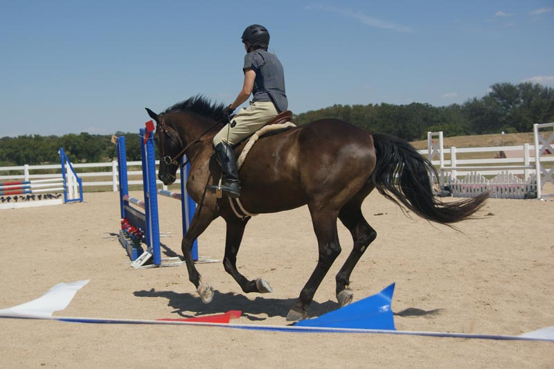
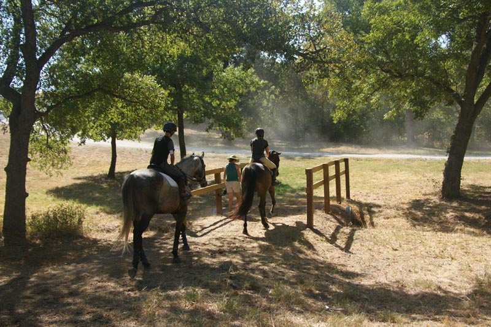

Schooling Stadium and Cross Country at Willow Draw
I wasn't up to entering the show, but couldn't resist the draw of schooling with the course marked and decked out.
We also went around the Novice stadium round for practice. There we hit some fences and I was reminded that I really need to take jumping lessons
if I'm going to go out in public and jump. Miaren had fun and I had more jumps this time where I let him go. That's always a work in progress.
Warming up. I'd already been
roading on Thuy that morning for a couple hours. Miaren had tons more energy than
I did.
Reminding him how we jump together. I don't think I've jumped him all summer. He
did go out with Emily aboard a few weeks earlier and had fun.
We made it over all the stadium jumps, but part of the time I was just hanging on.
Wheee! It was already set as an oxer, but he decided to go extra long. I love seeing
his knees to his neck and the stretch and try.
Big jump and grabbing some mane. I didn't think the Novice cross country looked
too bad this time. We just need to get together better on the jumping before we
tackle them.
I forgot this was 8 and we had a really bad line to it. He was great and still hit
it in the middle and lined up right before it.

Our dressage canter work is coming through in the jumping ring now.
If we practiced more, I think our stadium rounds could be great.
He refused the first jump on course. It was really inviting, but I think I had too
much a hold on him. He came around and went right over.
A better release than the first try. I worry about what he'll do on the landing
side, but other riders laugh when I mention him taking off. When they ride him they
have a hard time with forward. I'm content with slow, but need to step it up for
cross country.
I was already intimidated by fence 2, but Miaren said not to worry.
Looking at him in the pasture I think of him as gawky. Seeing him like this he's
rather nice.
I might need to shorten my stirrups another hole. At least my feet aren't below
his belly.
In the shadows. I forget these are shorter than the Novice jumps we do in stadium.
They're intimidating with an open field on the landing side.

He cantered into the water, but we lost a little momentum part way through.
So he did his exaggerated trot.
I love seeing him working correctly over his back and neck.
And the jump right after the water. Not a lot of forward, but he was game.
Awkward. We cantered to it, then he slowed when he saw the hill and the next jump.
He crawled over and tried to go around the hill.
I kept him going to the top and he was enthusiastic when he saw the downhill side.
Not a big effort but being sure to clear it.
No picture of Miaren showing how much he liked this water jump. We were sauntering
along and he collapsed his legs and laid down. I was surprised, but still standing
and got my feet out of the stirrups. I did get him up before he rolled and got the
saddle wet. Meg said she could see our heads over the rise and then we disappeared.
I guess he was getting hot.
This was at the top of a hill. We fussed with each other on the way and he did this
twice. I wasn't holding him, but by time we got to the top he was running out of
gas. He also didn't seem to care that he had to drag his hind legs over.
So I got a good canter, but also told him to keep his head up and not dive.
Finally he gave it the effort it deserved. Meg said for a jump that I said I didn't
want to do, I sure jumped it a lot.

He didn't completely trust the bridges.

Down banks have been an issue in his past. They've also not been an issue at all,
at times. I don't think they worry him, but they're an excuse for him to test his
rider. This day I had time and I knew I'd get him down.
I'd guess it was at least 10 minutes, but we'd do leg yields and trot circles and
then I'd ask him to do the bank. When he refused we went back to the dressage work.
His leg yields were very nice and when he pawed with frustration at the last leg
yield I knew he was ready to give in.

No hesitation when I presented him this time. Anything to stop doing dressage work
with fun jumps all over the place. Silly horse, don't you know I'm more stubborn
than you are?
A nice easy jump to remind him how much fun this is.
Real energy on the last fence. I was worried I was tiring him out, but he was still
eager to go at the end. I was so glad we did everything on the course. Now it's
back to dressage for us.